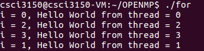
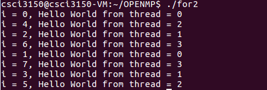

Parallel in OpenMP
First way to create thread is a little similar to that in pThread:
Think about last week's lab of pThread. You can create some numbers of threads, and you can assign each thread a function to run.
Here just look the parallel region in OpenMP as the function you want each thread to run.
- Just add a compiler directive statement before the parallel region.
- Tell compiler how many thread you want to have on parallel region(or not tell by default core number)
Then OpenMP will create such number of threads and run the parallel region.
What you have run of helloworld.c is an example.
#pragma omp parallel private(tid)- this is a compiler directive statement, which you should always write before your parallel region. To tell compiler "hey, could you please help me to parallel the following code region?". Then OpenMP will create some threads as your instruction.
This is a basic way to create threads and parallel your program, you can define what your thread will do in this way.
OpenMP also have a solution to parallel the for loop.
#include <omp.h>
#include <stdio.h>
main(int argc, char *argv[]) {
int nthreads=4;
omp_set_num_threads(nthreads);
int i;
/* Fork a team of threads with each thread having a private tid variable */
#pragma omp parallel for
for (i=0; i<nthreads; i++) {
/* Obtain and print thread id */
int tid = omp_get_thread_num();
printf("i = %d, Hello World from thread = %d\n", i, tid);
} /* All threads join master thread and terminate */
}

omp_set_num_threads(4);- tell compiler that I want to use 4 threads
#pragma omp parallel for- tell compiler that I want to parallel my
forloop
- tell compiler that I want to parallel my
It's clear that OpenMP will will assign one round in for to a thread, what if total number of for rounds is bigger than nthreads?
#include <omp.h>
#include <stdio.h>
main(int argc, char *argv[]) {
int nthreads=4;
omp_set_num_threads(nthreads);
int i;
/* Fork a team of threads with each thread having a private tid variable */
#pragma omp parallel for
for (i=0; i<8; i++) {
/* Obtain and print thread id */
int tid = omp_get_thread_num();
printf("i = %d, Hello World from thread = %d\n", i, tid);
/* do something time consuming*/
int j=0;
int a=0;
for(j=0;j<1000000000; j++) {
a++;
}
} /* All threads join master thread and terminate */
}

- each time there are 4 threads running at the same time.
- the tid thread deal with the X-loop, where X range from
tid*(totalcircle/nthreads)to(tid+1)(totalcircle/nthreads)-1 - in each loop, there is another
forloop, you can look this for loop as whatever may time consuming. I just want to show the multi-threads performance more obvious. And what if the total number of rounds in
forcan't be devided by the nubmer of threads?please try by yourself!
#include <omp.h>
#include <stdio.h>
main(int argc, char *argv[]) {
int nthreads=4;
omp_set_num_threads(nthreads);
int i;
/* Fork a team of threads with each thread having a private tid variable */
#pragma omp parallel for
for (i=0; i<9; i++) {
/* Obtain and print thread id */
int tid = omp_get_thread_num();
printf("i = %d, Hello World from thread = %d\n", i, tid);
/* do something time consuming*/
int j=0;
int a=0;
for(j=0;j<1000000000; j++) {
a++;
}
} /* All threads join master thread and terminate */
}
- How can you assign your own work load to each thread? (Here is a just simple example, you can have many ways to assign your own workload to each thread!)
#include <omp.h>
#include <stdio.h>
int main() {
int num_threads=4;
int num_for_rounds=10;
int step = num_for_rounds / num_threads + 1;
int i;
#pragma omp parallel for
for(i=0; i<num_threads; i++) {
int tid = omp_get_thread_num();
if(tid == num_threads - 1) {
int j;
for(j=tid*step; j<num_for_rounds; j++) {
printf("tid = %d, idx = %d\n", tid, j);
}
} else {
int j;
for(j=tid*step; j<(tid+1)*step; j++) {
printf("tid = %d, idx = %d\n", tid, j);
}
}
}
return 0;
}
This is another way to control what your thread will do.